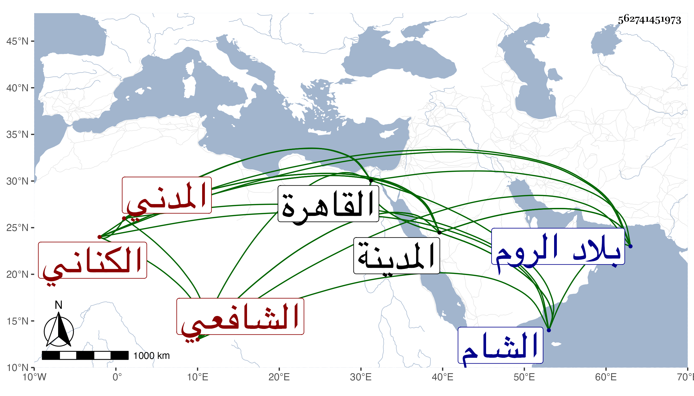

0902Sakhawi.DawLamic.ITO20230111-ara1.EIS1600.562741451973
Biography ID: 562741451973
551
محمد بن محمد بن محمد بن عبد الرحمن بن محمد بن محمد بن صالح ناصر الجدين أبو الفضل وأبو العز بن الزكي بن فتح الدين الكناني المدني الشافعي الماضي أبوه وجده ويعرف كسلفه بابن صالح. نشأ في كنف أبيه فحفظ القرآن والمنهاج وعرضه علي مع الجماعة في سنة ثمانين واشتغل قليلا وقرأ علي في القول البديع وتقريب النووي وغيرهما وكذا قرأ في القراآت على الزين جعفر وأجاز له وسافر إلى الروم في حياة أبيه وبعده وأجحف فيما استأداه من أوقافهم التي هناك جدا ولم يرض عنه واحد من الفريقين ودخل الشام والقاهرة وغيرهما غير مرة وزاحم أعمامه بجزء في الخطابة والإمامة والنظر ورام أكثر من ذلك . وهو فطن ذكي جريء مقتدر على الألفات إليه مع صغر سنة . وكان الأشرف قايتباي أمر بسجنه في القاعة بسبب مرافعة أحد أعمامه مع أهل المدينة في أبيه ثم أطلقه من الغد وتكررت محنة وتزايد فقره لعدم حسن تدبيره ومشيه وصار إلى حالة كثر تألمي له بسببها ولو وفق لكان أحد رءوس بيته وهو الآن بالمدينة بعد تشتته عنها دهرا أحسن الله عاقبته .
